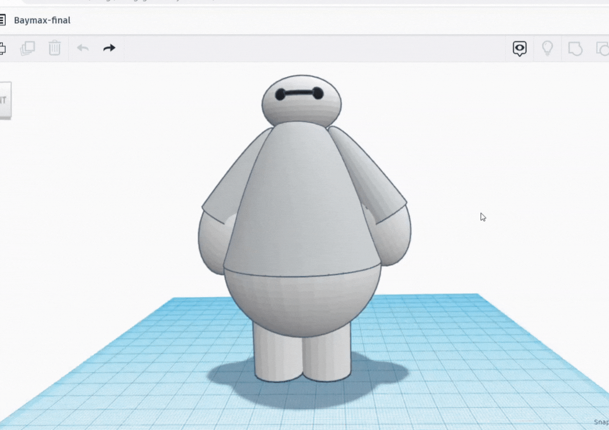
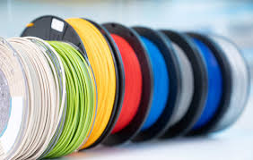
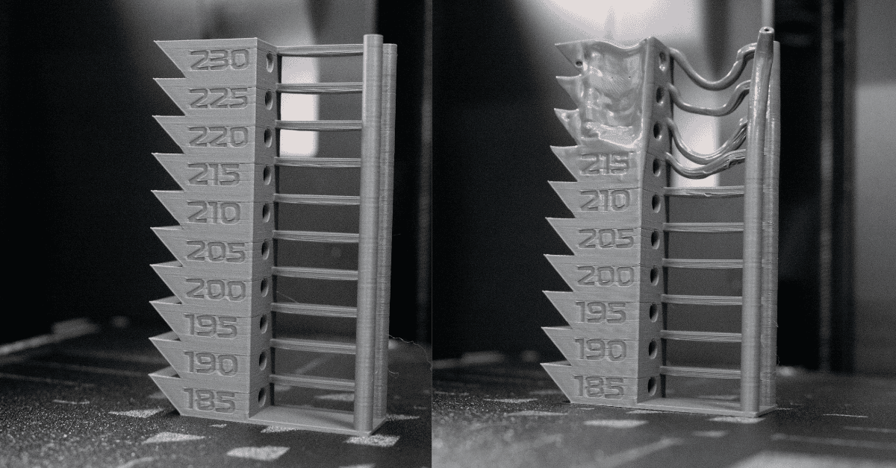
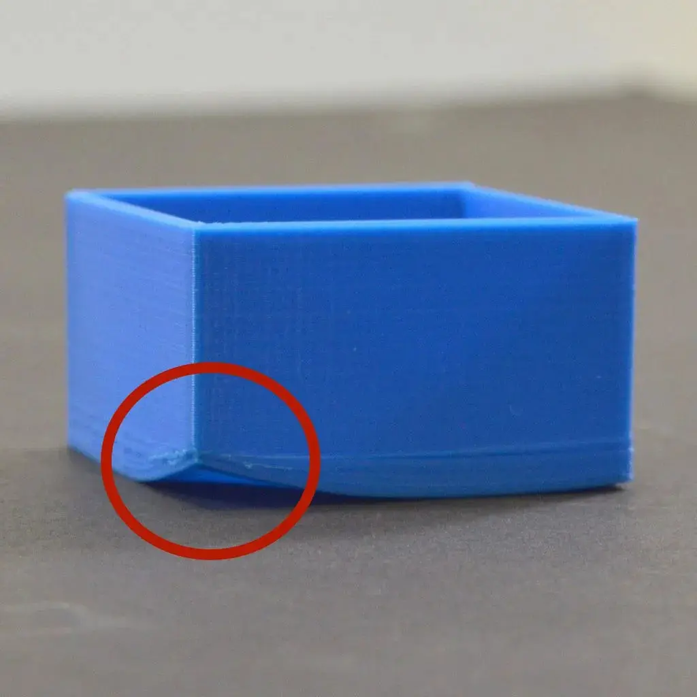
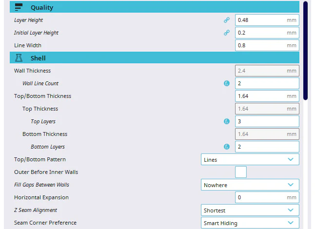
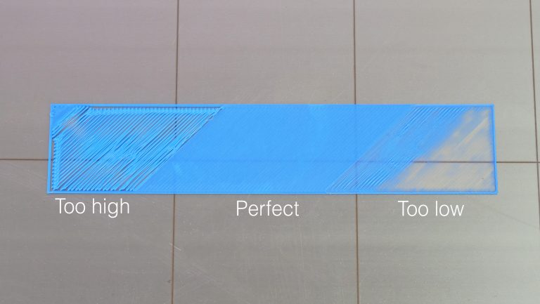
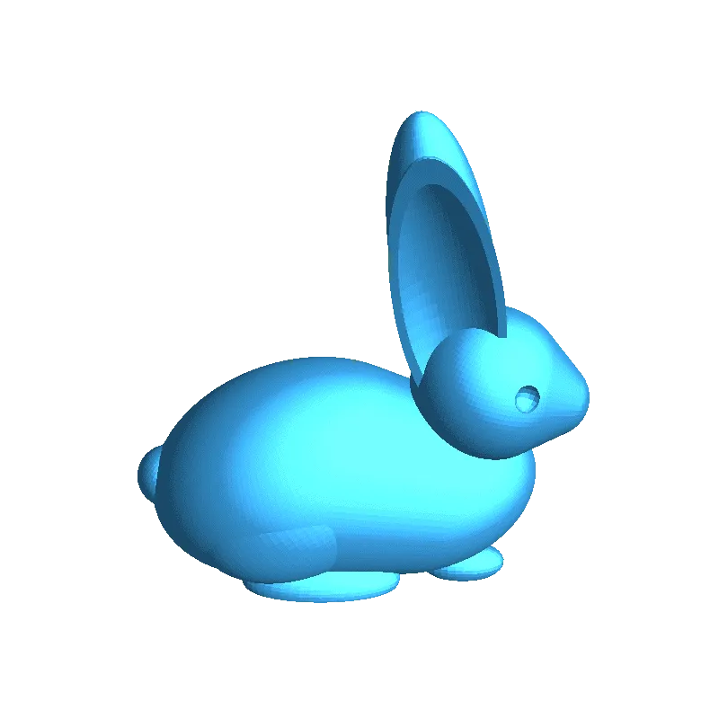

Tippek kezdőknek
A 3D nyomtatás világa izgalmas, de kezdetben kihívásokkal teli lehet. Ezekkel a tippekkel gyorsabban elindulhatsz és elkerülheted a leggyakoribb hibákat!
-
Kezdj egyszerű modellekkel – Válassz letölthető, könnyen nyomtatható modelleket (pl.
Thingiverse,
Printables,
Maker World), és ismerkedj meg a nyomtatási folyamattal.
 Egyszerű, letölthető modellek
-
Használj PLA filamentet – A PLA a legkönnyebben nyomtatható anyag, nem igényel fűtött asztalt, kevésbé vetemedik, és jó minőségű nyomatokat eredményez. Az egyik legjobb gyártó itt a
Bambulab.
 PLA filament tekercs
-
Szintezd be a nyomtatóágyat – A sikeres nyomtatás alapja a jól beszintezett ágy. Használj papírlapos módszert vagy automatikus szintezést (ha elérhető).
 Nyomtatóágy szintezése papírral
Nyomtatóágy szintezése papírral
-
Állítsd be a megfelelő hőmérsékleteket – Minden filament más hőmérsékletet igényel. Kezdd a gyártó ajánlásaival, és finomhangold a tapadás és rétegminőség érdekében.
 Hőmérséklet beállítása a nyomtatón
-
Használj tapadást segítő módszereket – Ha a nyomat nem tapad megfelelően, próbálj ki ragasztórudat, hajlakkot vagy speciális nyomtatófelületeket (pl. PEI lap).
.jpeg) Tapadást segítő eszközök
Tapadást segítő eszközök
-
Ha valamilyen problémába ütközöl, érdemes ezt az oldalt megnézni:
www.simplify3d.com
 Gyakori hibák és megoldások
-
Figyelj a slicer beállításokra – Használj olyan slicer programokat, mint a PrusaSlicer, Cura vagy Bambu Studio, és állítsd be a rétegvastagságot, kitöltést és sebességet az igényeid szerint.
 Slicer program beállításai
-
Ne hagyd felügyelet nélkül az első réteget – A legtöbb nyomtatási probléma az első rétegnél jelentkezik. Ha ez jól sikerül, nagyobb eséllyel lesz jó a teljes nyomtatás.
 Az első réteg ellenőrzése
-
Gyakorolj és kísérletezz – A 3D nyomtatás tanulási folyamat. Ne csüggedj, ha valami nem sikerül elsőre, próbálj ki különböző beállításokat és anyagokat!
.jpeg) Kísérletezz különböző modellekkel és beállításokkal
Kísérletezz különböző modellekkel és beállításokkal
-
Csatlakozz közösségekhez – Rengeteg Reddit csoport, fórum és Discord szerver segíthet, ha problémába ütközöl vagy tanácsra van szükséged.
Online 3D nyomtatós közösségek

Egy egyszerű, kezdőknek ajánlott 3D nyomtatott tárgy
| Anyag | Előnyök | Hátrányok |
|---|---|---|
| PLA | Könnyű nyomtatni, környezetbarát, jó minőség | Alacsony hőállóság, rideg |
| ABS | Erős, hőálló, tartós | Vetemedik, szaga van, zárt tér kell |
| PETG | Rugalmasabb, erős, kevésbé vetemedik | Kevésbé részletgazdag, szálasodhat |
A leggyakoribb 3D nyomtatási anyagok összehasonlítása